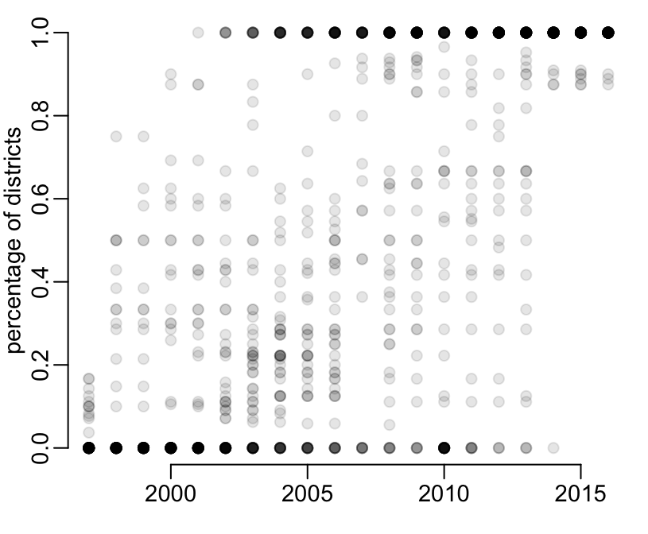
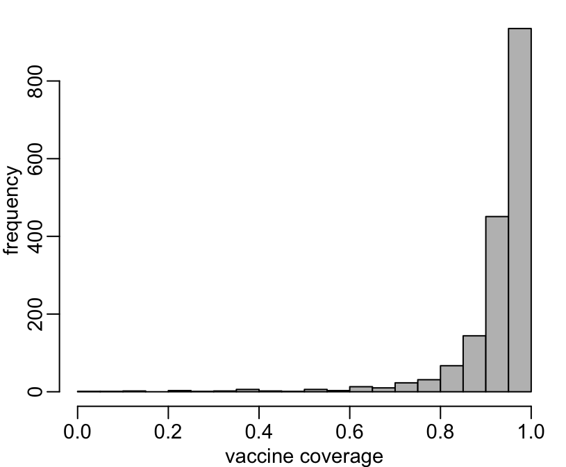

epiVNThis package contains vaccine coverages by province and year in Vietnam. These data come from the WHO’s Expanded Programme on Immunization (EPI).
You can install epiVN from GitHub
> # install.packages("devtools")
> devtools::install_github("choisy/epiVN", build_vignettes = TRUE)Once installed, you can load the package:
> library(epiVN)So far, there is vaccination data only against Japanese encephalitis, per province, per year from 1997 to 2016. These data are contained in the je data frame. Data against other diseases will be added latter on.
> data(je)
> dim(je)
[1] 2560 7
> head(je)
province year nb_doses nb_districts districts_tot nb_people people_tg
1 An Giang 1997 2 0 11 NA NA
2 An Giang 1997 3 0 11 NA NA
3 An Giang 1998 2 0 11 NA NA
4 An Giang 1998 3 0 11 NA NA
5 An Giang 1999 2 0 11 NA NA
6 An Giang 1999 3 0 11 NA NAThe data are defined for a given province (province), a given year (year), and a given vaccination dose scheme (nb_doses) and contains:
nb_districts: the number of districts where the vaccine policy is implemented;
districts_tot: the total number of districts in the given province for the given year (varies from province to province but also potentially from year to year);
nb_people: the number of people that have been vaccinated;
people_tg: the targetted number of people to vaccinate.
Note that the nb_districts is the same for the 2 doses scheme of a given province and a given year.
The number of districts included in the vaccination programme increases with time:
> plot(nb_districts / districts_tot ~ year, subset(je, nb_doses == 2),
+ pch = 19, col = rgb(0, 0, 0, .1),
+ xlab = NA, ylab = "percentage of districts")
> with(je, hist(nb_people / people_tg, n = 20, col = "grey",
+ xlab = "vaccine coverage", ylab = "frequency"))